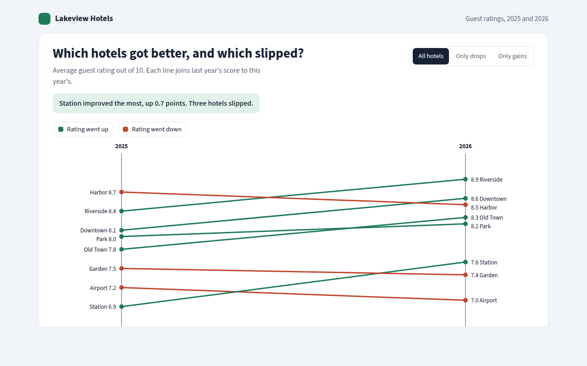
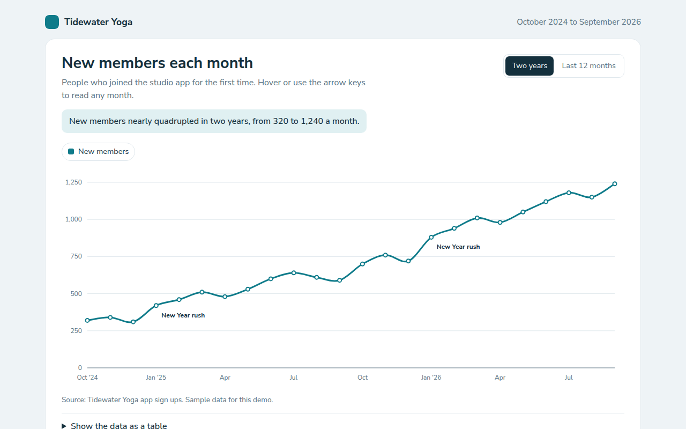
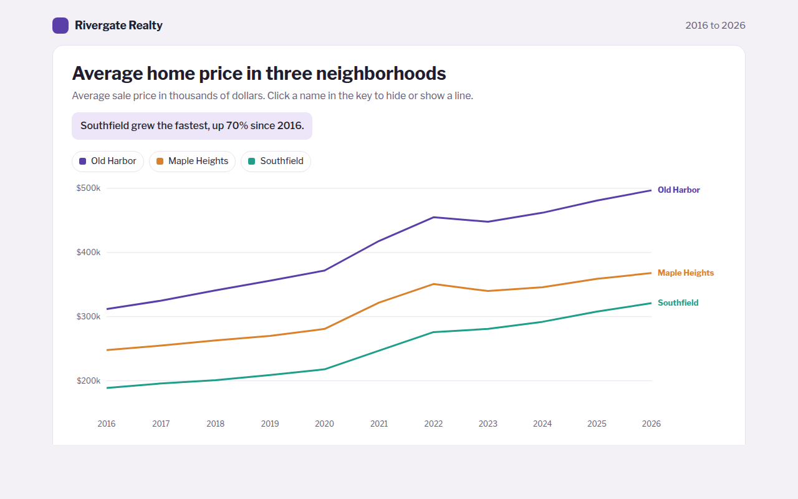
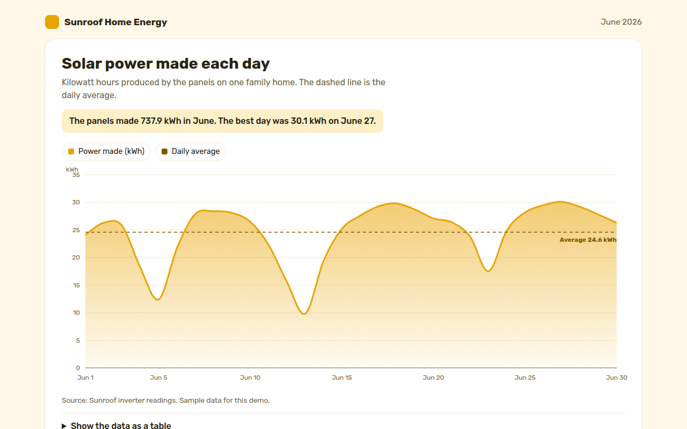
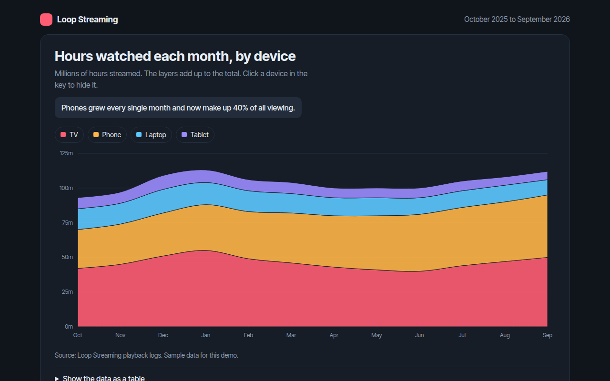
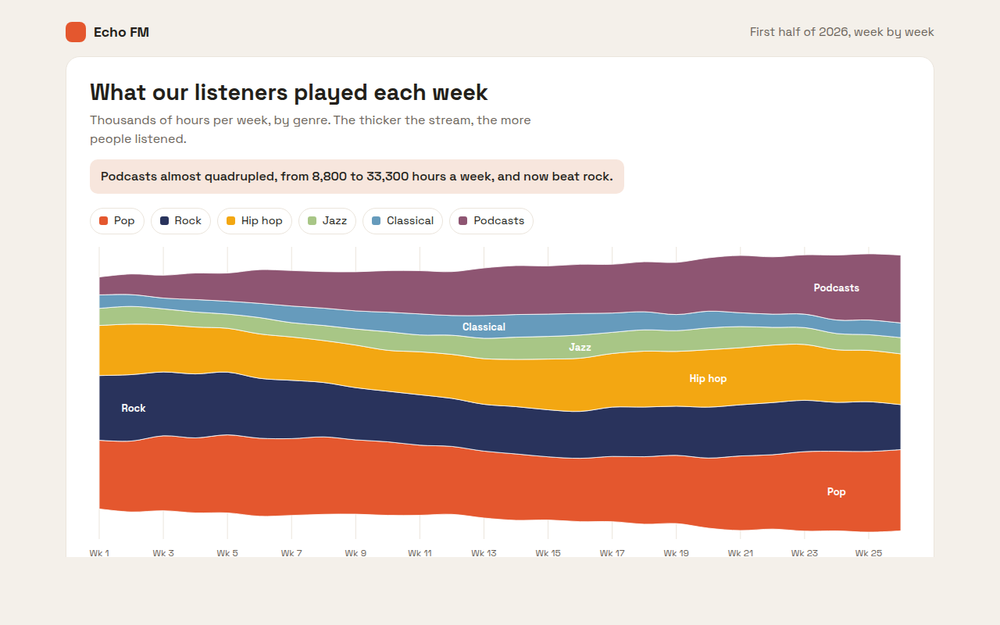
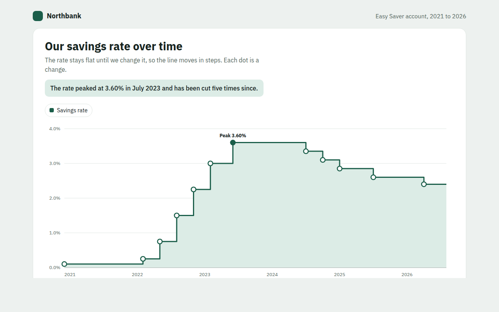
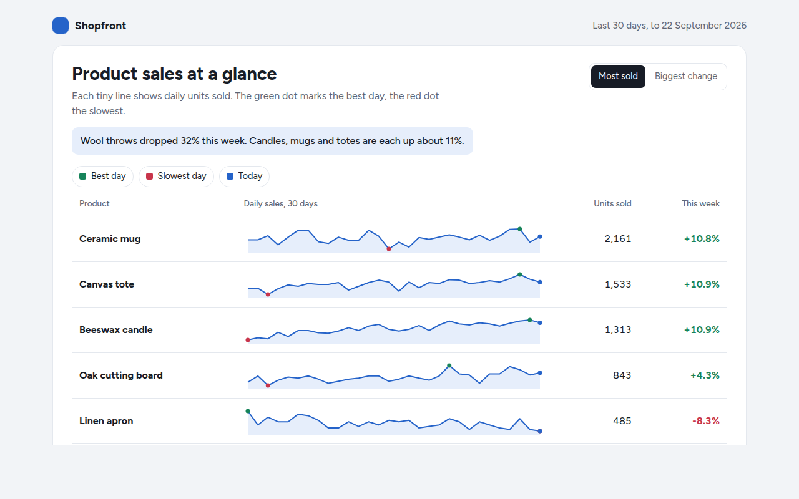
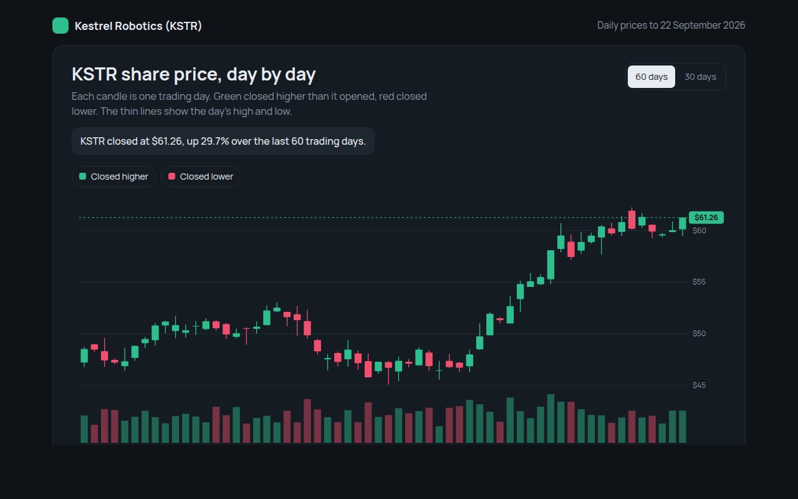
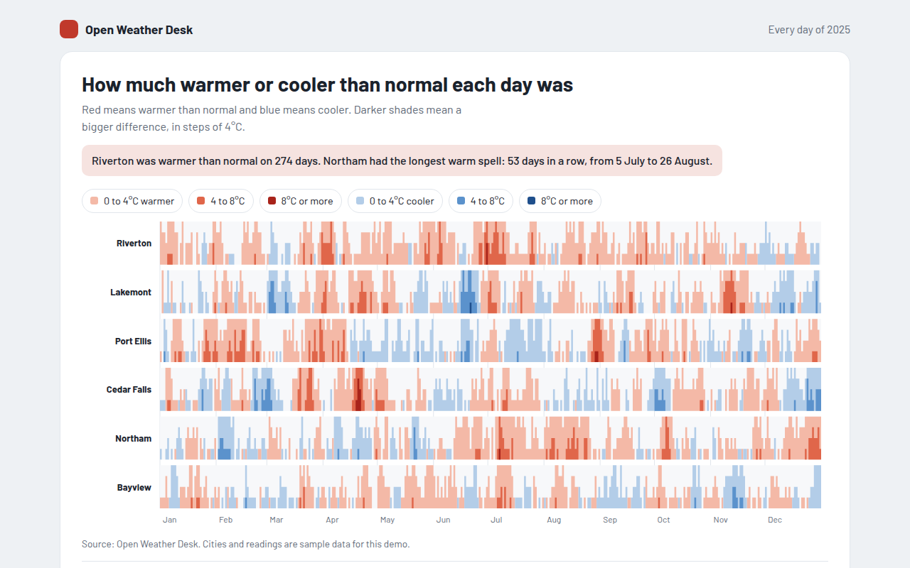

Home / Trends Over Time / Slope Chart
Slope Chart in HTML, CSS and JavaScript
A slope chart compares two points in time for many items. This free template draws one with plain SVG and vanilla JavaScript, no chart library. The example shows guest ratings for eight hotels in 2025 and 2026.

What is a slope chart?
A slope chart compares two points in time for many items. Each item is a line from its first value on the left to its second value on the right. Lines that go up improved and lines that go down got worse.
The angle of each line tells the story at once. It is also the best way to show changes in rank, because lines that cross show items passing each other.
At a glance
- Best for
- Many items compared at two moments
- Data you need
- A name and two numbers for each item
- Skip it when
- More than two points in time. Use a line chart.
- Made with
- HTML, CSS and vanilla JavaScript. No library.
When to use a slope chart
- Ratings or scores this year against last year
- Rankings before and after a change
- Prices in two different years
- Results for each team at the start and the end of a project
When to pick another chart
- Dumbbell Chart: you want every item on its own row
- Multi Line Chart: you have more than two points in time
What you get in this template
- Green lines for gains and red lines for drops
- Labels that move apart so they never overlap
- Filters to show all hotels, only drops or only gains
- A wide invisible hover area on each line so it is easy to point at
- Lines grow from left to right on load
- Keyboard support and a table with the change
How the code works
Here is a short version of the idea behind this slope chart. The full file adds the axis, labels, tooltips, sorting and resizing on top of it.
const hotels = [['Station', 6.9, 7.6], ['Harbor', 8.7, 8.5], ['Downtown', 8.1, 8.6]];
const left = 150, right = 450;
const y = r => 280 - (r - 6.5) / 2.7 * 260;
hotels.forEach(([name, before, after]) => {
const color = after >= before ? '#1f7a5c' : '#c2452d';
drawLine(left, y(before), right, y(after), color, 3);
drawText(left - 10, y(before) + 4, name + ' ' + before, 'end');
drawText(right + 10, y(after) + 4, after + ' ' + name);
});The example uses four tiny helpers that create SVG shapes. Put them above the code and it runs as is.
const svg = document.querySelector('svg');
function make(tag, attrs) {
const n = document.createElementNS('http://www.w3.org/2000/svg', tag);
for (const k in attrs) n.setAttribute(k, attrs[k]);
svg.appendChild(n);
return n;
}
function drawRect(x, y, width, height, fill) { return make('rect', { x, y, width, height, fill }); }
function drawCircle(cx, cy, r, fill) { return make('circle', { cx, cy, r, fill }); }
function drawLine(x1, y1, x2, y2, stroke, width, dash) {
return make('line', { x1, y1, x2, y2, stroke, 'stroke-width': width || 1, 'stroke-dasharray': dash || 'none' });
}
function drawText(x, y, str, anchor) {
const t = make('text', { x, y, 'text-anchor': anchor || 'start' });
t.textContent = str;
return t;
}How to add it to your website
- Download the file. Click Download HTML file above. You get one file called slope-chart.html with everything inside.
- Change the data. Open the file in any code editor and find the DATA list near the bottom. Replace the names and numbers with your own.
- Change the colors and text. Colors are at the top of the style tag. The title, subtitle and main point are plain HTML near the top of the body.
- Put it online. Upload the file to any host, such as GitHub Pages, Netlify or your own server, or paste it into your site. There is no build step.
Questions people ask
What is a slope chart?
A slope chart draws a line for each item from its value at one time to its value at a later time. The slope of the line shows whether it went up or down and by how much.
Who made slope charts popular?
Edward Tufte showed them in 1983 under the name slopegraph, and they have become common in news and reports since.
How do I stop labels overlapping in a slope chart?
Sort the labels by height, then push each one down if it is too close to the one above. If the last label goes off the bottom, shift them all up. This template does exactly that.
When should I use a dumbbell chart instead?
Use a dumbbell chart when you want to scan item by item on rows. Use a slope chart when changes in rank and the direction of change matter most.
More trends over time

011. Line Chart
Example: new members each month for a yoga studio app
012. Multi Line Chart
Example: average home prices in three neighborhoods over ten years
013. Area Chart
Example: solar power made each day by a family home
014. Stacked Area Chart
Example: hours watched each month on a streaming app, by device
015. Streamgraph
Example: weekly listening hours by genre on a radio app
016. Step Line Chart
Example: the interest rate on a savings account from 2021 to 2026
017. Sparkline
Example: daily sales for six products in a shop dashboard
018. Candlestick Chart
Example: daily share prices and volume for a made up robotics company